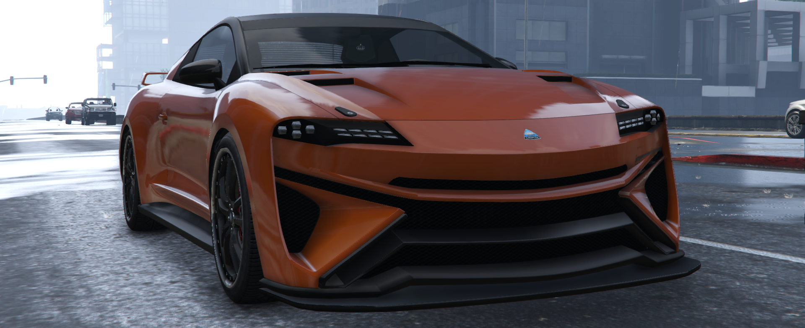
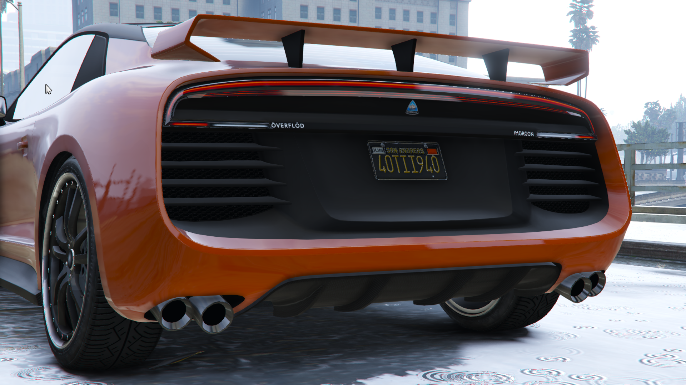

O Overflod Imorgon é a síntese da inovação e do luxo no universo automotivo. Inspirado pela filosofia da Overflod de criar veículos com desempenho impecável e um visual marcante, o Imorgon surge como um modelo híbrido que equilibra perfeitamente potência, sustentabilidade e design visionário. É o carro ideal para quem busca estar à frente do seu tempo sem abrir mão do estilo.
Com linhas aerodinâmicas e agressivas, o Overflod Imorgon exala modernidade. Sua silhueta futurista é acentuada por detalhes metálicos e um sistema de iluminação em LED que cria um visual único tanto durante o dia quanto à noite. Cada curva foi cuidadosamente projetada para proporcionar eficiência e atrair olhares, reforçando sua presença icônica nas ruas.
Um verdadeiro laboratório sobre rodas. Equipado com um sistema de direção autônoma de última geração e uma motorização elétrica híbrida de alta performance, ele entrega uma experiência de direção envolvente e ecologicamente consciente. Seu painel digital, com integração total a dispositivos móveis, torna a conectividade e o controle do veículo intuitivos e simples.
No interior, luxo e funcionalidade caminham juntos. Os assentos em couro premium, com ajustes elétricos e aquecimento, garantem máximo conforto, enquanto a iluminação ambiente configurável cria uma atmosfera personalizada. Cada detalhe, desde os acabamentos em fibra de carbono até o sistema de som imersivo, foi pensado para oferecer uma experiência refinada e futurista.